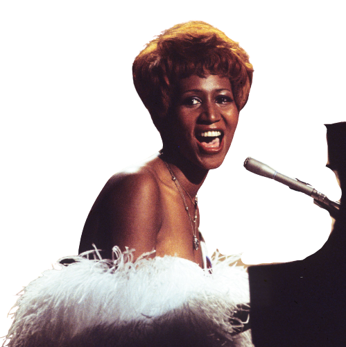
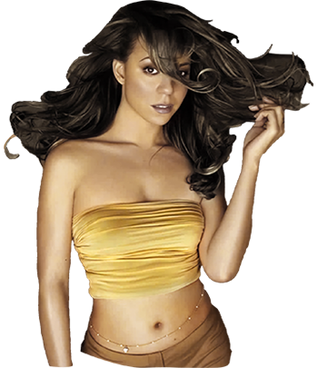
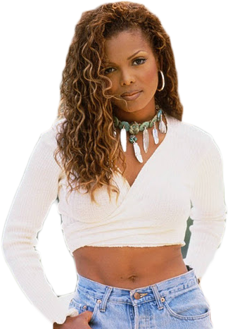

~Aretha~
lyric
Aretha was in the VH1 show which is a good thing because really you don’t have any modern diva without her. She is the blueprint and also will never be replicated. Her voice – the range, the texture of it – is sublime. And she plays piano – self taught!
 Favorite Songs: Day Dreaming, Ain't No Way, Think
Favorite Songs: Day Dreaming, Ain't No Way, Think

~Mariah~
"I've realized the dream/ And I visualized/ The love that came to be"
Mariah was also in the VH1 special. She has one of my favorite singing voices ever – light as air, crystal clear, effortless but also impossible range. I love that she writes her own songs, and she’s a damn good at it. She can turn a ballad just as easily she can a hip hop song.
Favorite Songs: Breakdown (feat. Krayzie Bone and Wishbone), Vision of Love, Fantasy Remix (feat. ODB)
~Janet~
"Got my own mind/ I wanna make my own decisions/ When it has to do with my life, my life/ I wanna be the one in control" - Control
Janet isn’t the grandest vocalist – she has a sweet and soft, but capable, voice. But what she lacks in range she more than makes up for with her dancing. She’s an acrobatic and incredibly controlled (again, no pun intended) performer and really a template that will probably be followed for years to. And her music rocks. Her production is innovative and versatile – I especially love when she incorporates elements of rock.
Favorite Songs: What Have You Done for Me Lately, Black Cat, Got Til It's Gone
~Donna~

lyric
Donna Summer is a Capricorn, like me (She Works Hard for the Money, after all), so you might expect her to be staid and serious. Instead she’s like, the ultimate queen of the most fun, excessive genre to date – disco. It’s impossible to hear those pulsing beats or her breathy, assertive voice and not want to dance.
Favorite Songs: Bad Girls, The Wanderer, No More Tears (Enough is Enough), Breakaway
~Tina~

lyric
Tina is my grandmother’s favorite diva. She used to perform at a club gran worked at in St. Louis and she’s loved her ever since. Tina is the rockstar. Her physicality on stage is pure passion and power. Her voice crackles with strength and vulnerability. I listen to her music whenever I want to feel cool and dramatic.
Favorite Songs: River Deep, Mountain High, Girls, Be Tender With Me Baby
~Whitney~

lyric
Off the charts amazing vocalist. She has such a rich tone!! And the crispest diction. She’s a show woman but she exudes warmth. Her songs are all epic and super cinematic, when I listen to her albums, I can see movies in my head. Speaking of movies, she’s a pretty good actress, too! My mom showed me The Preacher’s Wife at Christmas and I really liked her in Cinderella, too.
Favorite Songs: I'm Your Baby Tonight, So Emotional, Saving All My Love